POL-4875 automatic profile extraction
Native PDF raster + vector-dimension calibration. Deterministic DP consensus; renderer untouched.
0.658total
0.852edge
0.141consensus
0.962dimensions
0.962rebate
A. Native source
 275×229 native JPEG, not a screenshot
275×229 native JPEG, not a screenshot
B. Edge evidence
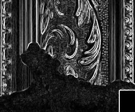
grayscale Sobel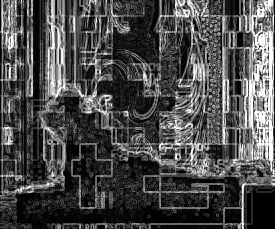
LAB gradient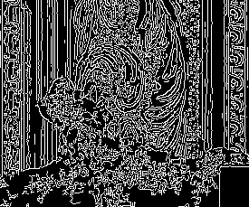
Canny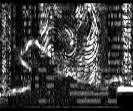
above/below material consistencyC–D. Dense path and simplified comparison
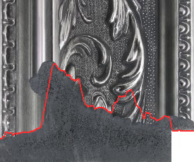
Dense automatic path in red Current heuristic vs new simplified consensus; amber bands indicate disagreement
Current heuristic vs new simplified consensus; amber bands indicate disagreementE. Physical profile
F–G. Confidence and uncertain regions
- 91.88–97 mm (max disagreement 9.47 px)
- 65.75–84.46 mm (max disagreement 36.23 px)
- 62.92–64.33 mm (max disagreement 5.57 px)
- 51.62–58.68 mm (max disagreement 10.74 px)
- 49.85–50.56 mm (max disagreement 5.54 px)
- 17.72–41.02 mm (max disagreement 21.14 px)
- 1.12–12.06 mm (max disagreement 15.54 px)
Spin top-surface experiment
LAB material clustering only; used for rejection/validation, not tracing.
img01 · side-oblique

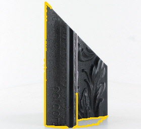
img02 · side-oblique

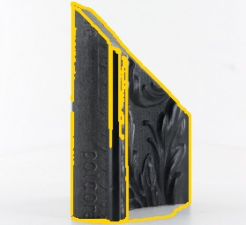
img11 · front-oblique
img23 · front

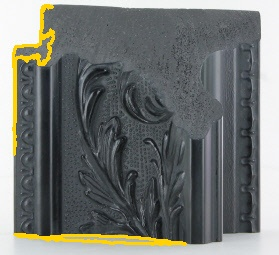
img34 · rear-oblique
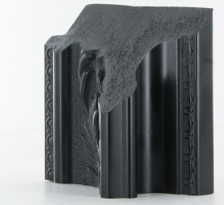
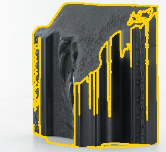
img44 · rear-oblique

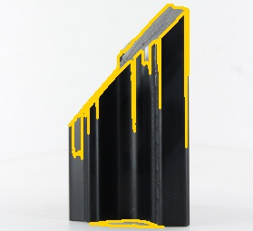
img45 · rear-oblique

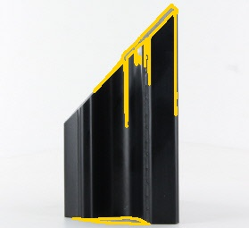
Clay validation
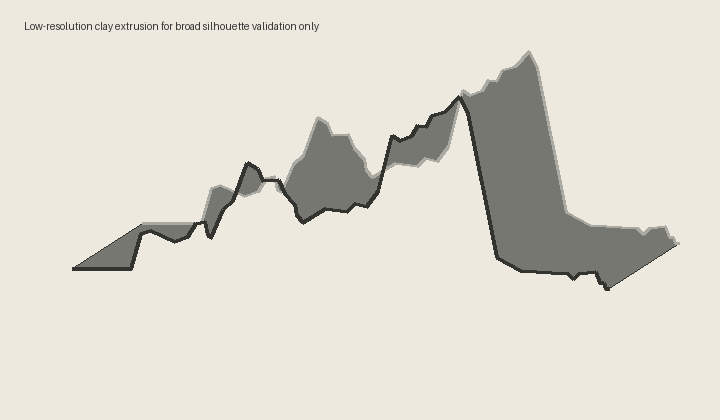
Broad silhouette check only; no pixel-perfect spin alignment claimed.